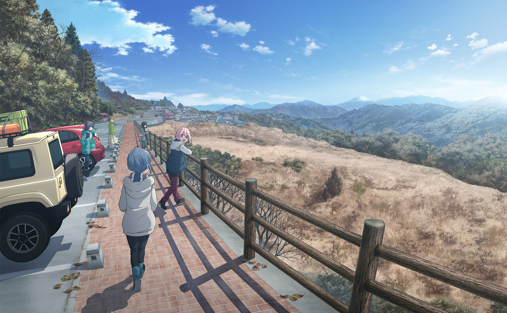

# Berita
Yuru Camp Musim ke 3?
Dibuat pada 22 Oktober 2022
Tanggal Rilis Yuru Camp Season 3
Musim ketiga anime belum dikonfirmasi. Anime ini adalah produk paling berharga di tangan C-Station. Ketika kami melihat popularitas saat ini, kami berpikir bahwa tidak ada yang akan menolak musim baru. Namun, manga tersebut belum menyediakan materi sumber yang cukup untuk musim ketiga.

Stok bahan untuk season baru tampaknya akan selesai pada tahun 2022. Mengingat waktu yang dibutuhkan untuk produksi anime, kita hanya dapat melihat musim ketiga pada tahun 2023. Sampai saat itu,
Musim kedua keluar setelah jeda panjang tiga tahun. Sebuah film sudah dijadwalkan untuk tahun ini, jadi kemungkinan besar film ketiga tidak akan dirilis tahun ini juga. Kali ini lagi, penggemar harus menunggu setidaknya dua tahun untuk melihat kembalinya acara ini. Oleh karena itu,
Yuru Camp Season 3 mungkin akan tayang perdana pada tahun 2023 atau 2024.

Adaptasi serial anime televisi untuk Yuru Camp telah tayang perdana pada 4 Januari 2018, disutradarai oleh Yoshiaki Kyōgoku serta diproduksi oleh C-Station.
Kontak
070 3776 223
Berlangganan
Masuk agar tidak ketinggalan berita dari kami.